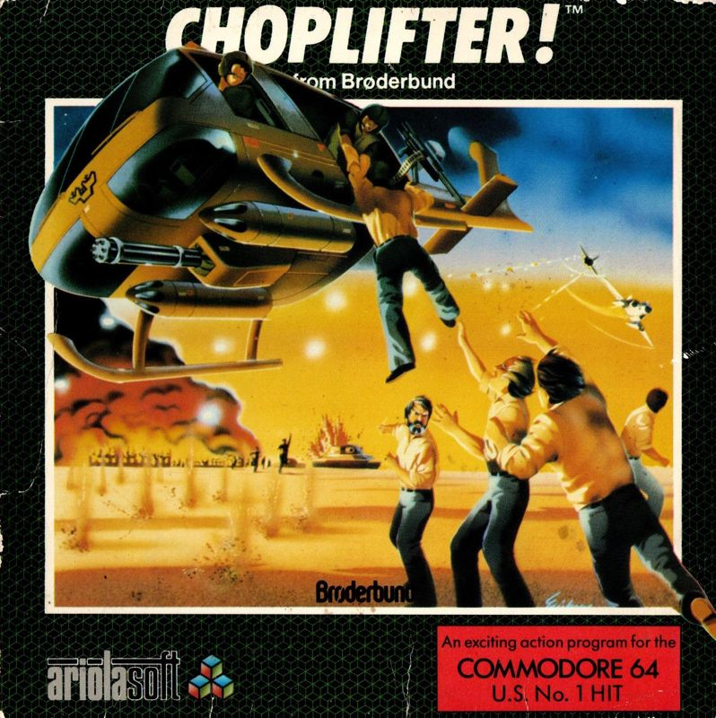

Choplifter
Choplifter is a classic video game developed by Dan Gorlin and published by Ariolasoft in 1982. It's a side-scrolling shoot 'em up where players control a helicopter rescuing prisoners of war. With its innovative gameplay and challenging levels, "Choplifter" became a hit, showcasing Ariolasoft's commitment to quality and innovation in gaming during the early '80s.